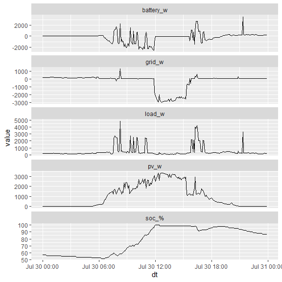

sunsynkr is an R package to help you acquire information about Sunsynk photovoltaic systems from their API. If you have a Sunsynk inverter and an account to view and manage it on SunsynkConnect, you should be able to use this package to retrieve information about your plant.
Note that this package is unofficial and is in no way associated with Sunsynk. It may stop working (or return misleading outputs) at any time and without warning.
Also note that this package is currently at an early stage of development. Functions may not work as specified and things may change fundamentally in future versions.
Installation
From R, you can install the current release of sunsynkr like so:
devtools::install_github("DavidASmith/sunsynkr")Example usage
First, load the package.
Authentication
You must configure environment variables to hold your sunsynk username and password (the ones you use to login to SunsynkConnect at https://sunsynk.net/). Configure the following environment variables:
SUNSYNK_USERSUNSYNK_PASS
Get a token
All sunsynkr functions which call the API require a token as an argument. Accordingly, you must first acquire an authentication token.
token <- get_token()
token
#> Sunsynk API token - Success
#> Type: bearer
#> Scope: allYou can now use this token to authenticate other susynkr functions to the API.
Get plants details
You can now get details of all plants associated with your account.
plants <- get_plants(token)Printing the sunsynkr_plants object returns a tibble summarising the information available for each plant.
plants
#> # A tibble: 1 × 7
#> id name address pac etoday etotal update_at
#> <chr> <chr> <chr> <int> <dbl> <dbl> <chr>
#> 1 XXXXXX XXXXX XXXXX XX XXXXXXX XX, XXXXXXXXX XXX… 0 24.7 7370. 2024-07-…Flow
We can query the most recent power flow from the API for a given plant. We can extract the plant from plants like this.
plant_id <- plants$data$infos[[1]]$idThen, we can obtain the power flow for the plant.
flow <- get_flow(token,
plant_id)Printing the sunsynkr_flow object outputs a representation of the power flows managed by the inverter.
flow
#> PV 0W ----- --<-- 17W Grid
#> | ------- |
#> -----| |--<--
#> | Inv |
#> -->--| |-->--
#> | ------- |
#> BATT 188W -->-- -->-- 194W Load
#> (88%)Day summary
You can return a summary of all power flows (and battery state of charge) at five minute intervals for a given day.
date <- lubridate::today() - lubridate::days(1)
day_summary_table <- get_day_summary_table(token,
plant_id,
date)
day_summary_table
#> # A tibble: 288 × 6
#> dt pv_w battery_w `soc_%` load_w grid_w
#> <dttm> <dbl> <dbl> <dbl> <dbl> <dbl>
#> 1 2024-07-29 00:00:00 0 19 90 167 152
#> 2 2024-07-29 00:05:00 0 19 90 165 150
#> 3 2024-07-29 00:10:00 0 21 90 166 150
#> 4 2024-07-29 00:15:00 0 19 90 166 153
#> 5 2024-07-29 00:20:00 0 21 90 163 150
#> 6 2024-07-29 00:25:00 0 21 90 165 145
#> 7 2024-07-29 00:30:00 0 18 90 164 149
#> 8 2024-07-29 00:35:00 0 20 90 164 146
#> 9 2024-07-29 00:40:00 0 17 90 163 148
#> 10 2024-07-29 00:45:00 0 20 90 164 147
#> # ℹ 278 more rowsYou can also generate a plot of the day summary table.
plot(day_summary_table)